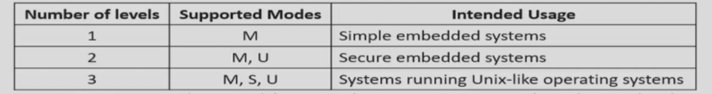

Chapter 4 | Processor¶
约 1228 个字 31 张图片 预计阅读时间 6 分钟
Part 1 单周期¶

Data Path¶
略
Control¶
- 七个控制信号和一个四位的
ALU operation


- ALU 信号

Part 2 流水线¶
单周期的弊端： 假设取指令 200ps, 寄存器读 100ps, ALU 计算 200ps, 内存访问 200ps, 寄存器写 100ps. 那么
add需要 600ps,ld需要 800ps,sd需要 700ps,beq需要 500ps.

- a pipeline in which one instruction is in each stage
- CPI is decreased to 1, since one instruction will be issued (or finished) each cycle.
吞吐率 | throughput
流水线实际上是提高了系统的吞吐率。但是Latency (time for each instruction)不会减少
竞争 | Hazards¶
导致下一条指令无法正常进行的
结构竞争 | Structure¶
A required resource is busy 大多数是硬件问题导致
- In RISC-V pipeline with a single memory
- Load/store requires data access
- Instruction fetch would have to stall for that cycle
- Would cause a pipeline “bubble”
- 把指令和数据分开存储 如果只有一块，那么当IF需要获取指令，Mem需要获取数据时就会发生结构冒险
数据竞争 | Data¶
Need to wait for previous instruction to complete its data read/write
前一个的结果是后一个的操作数

- WB在下降沿触发
- ID在上升沿触发
- 插入"Bubble"进行"缓冲"
Solution
- Forwarding (aka Bypassing)

ld指令

- 编译器方面


控制竞争 | Control¶
Deciding on control action depends on previous instruction
在ID阶段加入更多的硬件去判断
或者
使用Prediction技术

- 例如，对
beq，IF需要得知要去的地址，会把计算提前到ID步骤
Prediction¶
- Can predict branches not taken
- Fetch instruction after branch, with no delay
RISC-V Pipelined Datapath¶
Form¶

- 注意，上图中的Write Register是错误的


Control 指令¶

WB步骤的Write Register传回寄存器堆

Data hazards¶
Consider this sequence:
sub x2, x1,x3 and x12,x2,x5 or x13,x6,x2 add x14,x2,x2 sd x15,100(x2)
ID/EX那里要使用的RS是其他流水线的RD, 就出现了数据竞争（这里的定义有些笼统，更准确地还要加上条件：需要用到RS）

- 注意寄存器的写法，
ID/EX.RegisterRd
$$ 1. EX/MEM.RegisterRd=ID/EX.RegisterRs\ 2. EX/MEM.RegisterRd !=0 \ 3. EX/MEM.RegWrite==1 \ 对于MEM/WB级同理 \ \text{需要确保发生数据竞争的上一级的Rd是要写回的，且写回的寄存器不是}X_0 $$


Double Data Hazard¶
考虑两个地方都触发了数据竞争，选择最近的那个数据
add x1,x1,x2 add x1,x1,x3 add x1,x1,x4
需要对Mem/WB寄存器的特判
EX/MEM
EX/MEM.RegWrite and (EX/MEM.RegisterRd!=0) and EX/MEM.RegisterRd = ID/EX.RegisterRs1
MEM/WB

Load-Use Hazard Detection¶
graph LR
1[IF]
2[ID]
3[EX]
4[Mem]
5[WB]
1-->2-->3-->4-->5
- Load的时候，在
IF/ID步骤需要判断，因为 Load 的结果必须要到mem级才能获取，不能ID到错误的数据

ld的结果在EX/Mem阶段才能得到
Bubble：空挡

- Force control values in ID/EX register to 0 插零后面的，把当前的ID/EX变为NOP
- EX, MEM and WB do
nop (no-operation)
- EX, MEM and WB do
- Prevent update of PC and IF/ID register 停滞之前的
- Using instruction is decoded again

Branch hazard | Control¶

- 需要清除分支指令到达Mem阶段时其他前面几个寄存器
缩短分支延迟¶
将对分支的检测提前到ID阶段
- 需要新的前递和Stall单元
- bypass
- Stall ：比如计算分支地址需要的数据来自于上一级的EX、Mem
- 上一级存在ALU操作，且存在依赖关系。Stall one bubble
- 上一级存在ld操作，且存在依赖关系。Stall two bubbles
动态预测¶
- Branch prediction buffer (aka branch history table)
- Indexed by recent branch instruction addresses 按照分支指令的低位地址定位的小存储
- Stores outcome (taken/not taken)
- To execute a branch
- Check table, expect the same outcome
- Start fetching from fall-through or target
- If wrong, flush pipeline and flip prediction
分支预测单元可以放在ID级
即使存在Prediction，计算Branch Target的一个周期损失也不可避免
Branch target buffer | 分支目标缓存
Exceptions and Interrupts | 异常与中断¶
Interrupts
改变CPU的 work flow 的两种形式
predictable 比如beq、bne等命令发生跳转
unpredictable 出现异常

很多时候二者不加区分, 广义的Exception包括Interrupt
遇到异常需要处理两件事：
- 在哪里处理异常，如何跳过去
- 如何回去
1.中断来了怎么办。
2.存PC到Supervisor Exception Program Counter (SEPC)，控制权交给操作系统，通过强制跳转，
3.操作系统进行预先规定的操作，也可能是执行问题分析，也可能是重复执行。
4.分析原因时使用两种方法通知系统，
a. 设置SCAUSE
b. 向量式中断 | vectored interrupt
- RISCV中，由硬件部分实现对多个异常的优先级排序
Privilege
了解
可以看马德老师智云
- 模式


- 与模式相关
- 用户模式(User Mode)
- 机器模式(Machine Mode)
- 监督模式(Supervisor Mode)
- 原子操作
- 一共4096个CSR寄存器
Instruction

- 异常控制程序
Multiple¶

precise按照异常的先后实现impreciseSEPC保存的地址不一定是发生例外/异常时的地址- Let the handler work out
- Simplifies hardware, but more complex handler software
- Not feasible for complex multiple-issue out-of-order pipelines 对于无序的流水线不适用
Pipline | ITP¶
Problem¶
Excution Diagram的画法¶

Answer